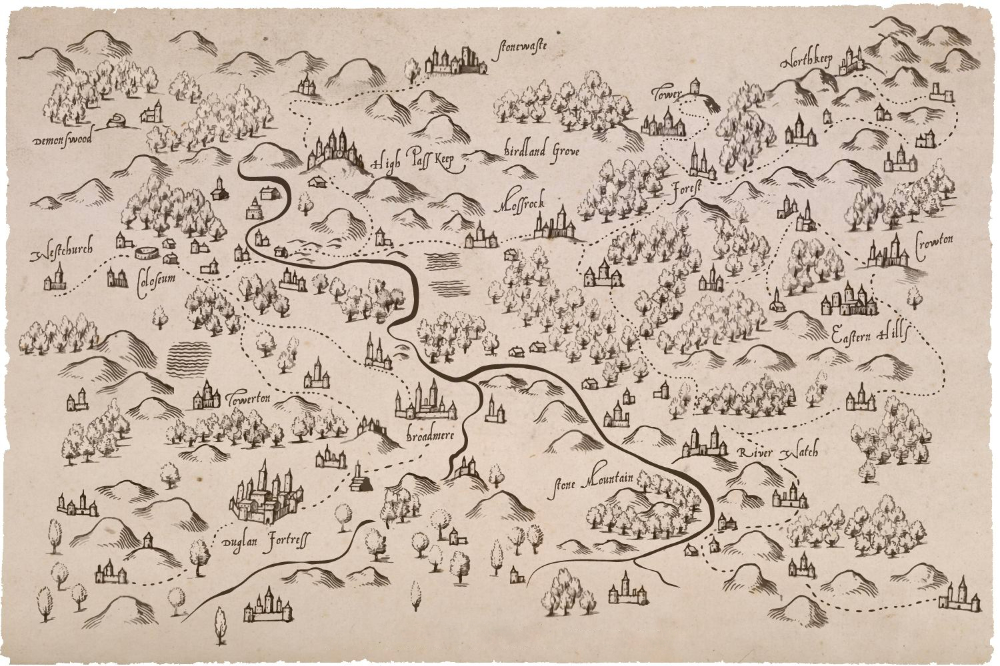
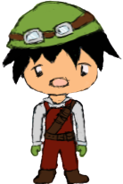

Now that you have a bow, you can attempt to save your parents.
The gate to the Demon Lord's castle is locked, in order to unlock the gate you must retrieve 3 keys.
The first key is located in the Coloseum where you must defeat 30 demons.

The second key is located in Towerton where you must fight tougher demons.
The final key is at Broadmere, where even more demons await you.
Once you have collected all three keys, head over to High Pass Keep, where the Demon Lord's castle is.